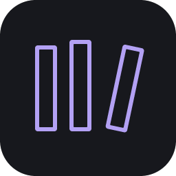

A library that makes sense.
Search book catalogs for your edition, group volumes into series, and keep your wishlist and reading archive separate from the books you own.

Quiet ShelfA little space for everything you read
Books, manga, comics, and the stories you come back to. Keep your shelf and reading history together, without counting every page.
Free and open source. No account required.
Search book catalogs for your edition, group volumes into series, and keep your wishlist and reading archive separate from the books you own.
Mark a title unread, in progress, or done. Save start and finish dates, come back for a reread, and see your reading history and library insights.
Generate a Read next checklist from your unread library. Get a varied mix with the next eligible volume in a series, then watch the list fill up as you finish.
Each version shares the same reading features and backup format. Downloads are hosted on GitHub; the latest release page lists the current packages.
A standalone app for Windows 11 on Intel or AMD PCs. Download the x64 setup .exe, install, and open Quiet Shelf.
No Node.js, terminal, or separate server needed. The installer is unsigned, so Windows may show a publisher warning.
For Android 8 and later. Download the .apk and open it on your device. Google Drive sign-in requires Google Play services.
Android may ask you to allow installation from your browser.
For x86-64 desktops. Choose the .deb for Ubuntu, Debian, or Mint, or the portable .tar.gz for a compatible distribution.
A system keyring is needed to remember Google sign-in between sessions.
A universal app for iOS and iPadOS 17.4 or later, including full-size iPad layouts, portrait, and landscape. Install the unsigned .ipa using AltStore Classic.
Free personal signing needs refreshing within seven days. This is not a tap-to-install or App Store download.
Prefer a browser? The release also includes quiet-shelf-pc.zip, which runs locally using Node.js. Browser setup instructions. This website introduces the project; it does not run your library.
Keep it local, or take it with you
Use Quiet Shelf without signing in, with JSON backup and restore. If you choose Google sign-in, Quiet Shelf uses your basic account details and its own hidden Google Drive app-data folder to sync your library and preferences across devices. It does not request access to your other Drive files.
The app syncs while open; your PC does not need to stay on for Google Drive to keep the saved copy. Catalog searches, cover images, and update checks use an internet connection.
Originally created by Alex (Ayca Kaygusuz). Quiet Shelf’s original project material is licensed under Apache-2.0. Explore the code, report a problem, or build on it under the license.